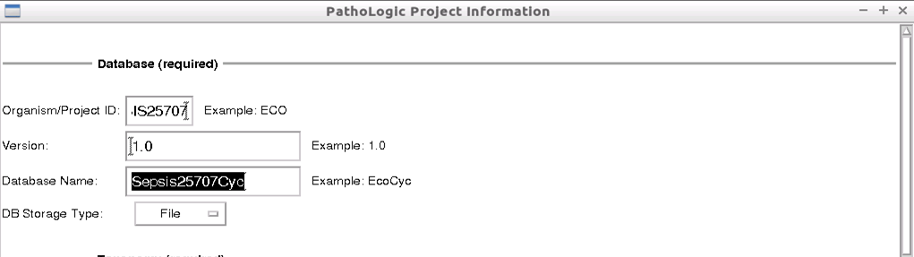
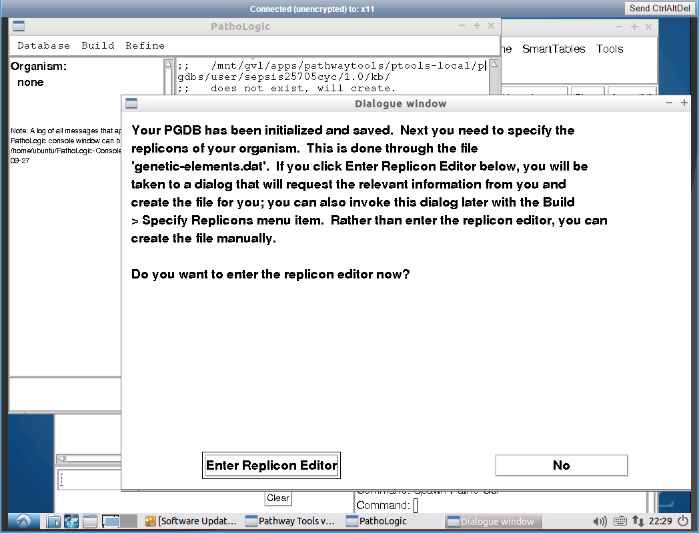
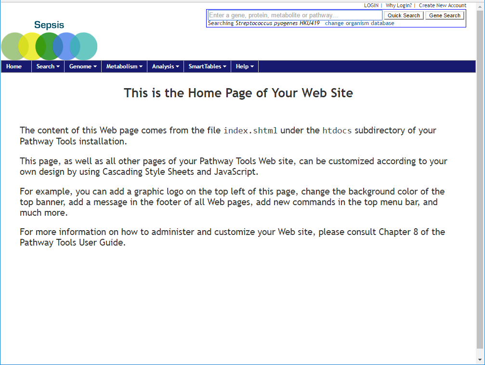
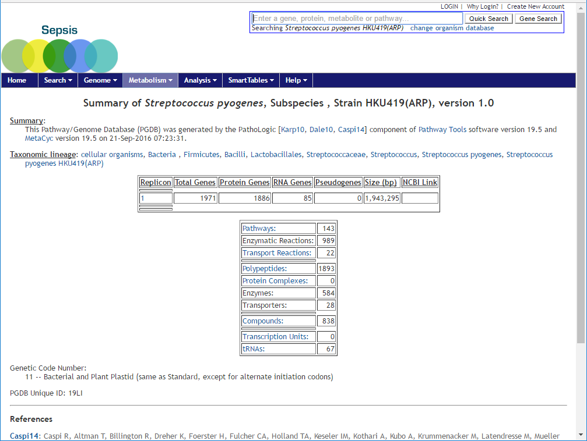

Pathway prediction and annotations for new organisms
Connect to mGVL using VNC
- Go to the mGVL dashboard
- Click on the link next to the Lubuntu Destkop (http://your-mgvl-ip-address/vnc)

A new browser will appear, enter your user credentials to login
Create a new Database
Once logged in, you should see the following desktop with the 3 Pathway tools icons on the left. Click on the first icon Pathway Tools v1.9.5. This will bring up a new window.

- In the Pathway Tools window, click on
Tools menu item and then click onPathLogic - In the new window, at the top, click on
Database and thenCreate New
Provide the metadata for the new database. In the Database(required) section, enter the following values:
- Organism/Project ID:
SEPSIS25707 - Database Name:
SepsisCycl
Leave the other parameters as the default values, that is: Version: 1.0 (default) DB Storage Type: File (default)

Under the Taxonomy (required) section:
- Check Box if this is a multi-organism database:
uncheck - In Organism taxonomic class, type “1314” and click on
Select . The species name of Streptococcus pyogenes will appear and a popup window will also appear. Click on to close the window. - Create organism?: click
yes - Strain:
HKU419(ARP) for sample (25707) - Genome Source:
ARP - NCBI taxonomy ID:
1314 (come back to this after Select “Strain” in next step) - Rank : Select
Strain
Leave all other fields as their default values:
- Full Species Name: autocomplete from the previous step
- Abbreviated Species Name: auto complete from the previous step
- Subspecies : leave it blank
- Default Codon Table: 11 - Bacterial and Plant Plastid…
- Mitochondrial Codon Table : 0 - Unspecified

Leave Credits(optional) section black.
- Click
OK .
Another window will appear while processing. Wait for processing to complete, until you see the next window. Click on

Specify Replicon details
In this view, you provide the details of the annotated assembly. Each chromosome will have a separate entry. For each chromosome, you need to provide the GBK and FNA annotation files from Prokka.
- Name :
1 ( This is the chromosome name or number) - Circular:
checked if circulator was performed or leave it unchecked - Select annotation file: select the gbk from prokka
- Select sequence file: select the fna from prokka
Leave other fields as their default value:
- Type: Chromosome (default)
- Code: Bacterial, Archaeal and Plant Plastid (default)
- ID: leave it blank (default)
- Links to other database: NCBI Reference Sequences Database (default)
-
Relationship : same Entity (default)
-
Click
OK

The metada for this database has now been created. Next we need to predict the pathways and annotate them.
Predict and annotate the pathways
Still on the previous window, from the top menu bar, click on

Once the process has completed, a new window, Pathway Scoring Parameters will appear. Leave the values as their default values.
- Taxonomic Pruning: Enabled (default)
- Pathway Prediction Score Cutoff: 0.15 (default).
A higher cutoff value for the prediction score will mean less pathways are predicted. This is the level of stringency imposed on the prediction.
Click

Again the process can take several minutes depending on the number of replicons included. Wait until the process is complete.
Click on
Verify and test the new Database
Now that the database has been created, we need to verify that it is available for use. First we check that it is present in the Pathway Tools. On the main screen, Pathway Tools - Available Databases, you should see a new entry at the bottom of the pre-existing list, “Streptococcus pyogenes HKU419(ARP)”.

To see this newly created database in the Pathway Tools web-application, start up the Pathway Tools Web service (if not already running).
- You can close all the windows, to exit Pathway Tools
- If the web server is not already running, click on the
Pathway Tool Web server from the desktop, this is the third icon. - Open an internet brwoser and go to http://your-mgvl-ip-address:1555

Using the new database in Pathway Tools Web service
- On the main screen, click on
change organism database at the top right corner, under the search box. - A new window will appear, select the newly created species from the list
- Click
OK


A statistic table of the species will be available for overview.

Click on the

You can navigate through the list of pathways and highlight a pathway of interest. For example,
- Click on the
+ symbol next to Detoxification - Click on the
+ symbol again next to Antibiotic Resistance - Click on
peptidoglycan biosynthesis V (beta-lactam resistance) which will bring up the pathway view

Go back to the previous screen with the statistics summary table and this time click on the

From here forward the user can explore using the Pathway Tools webservice.